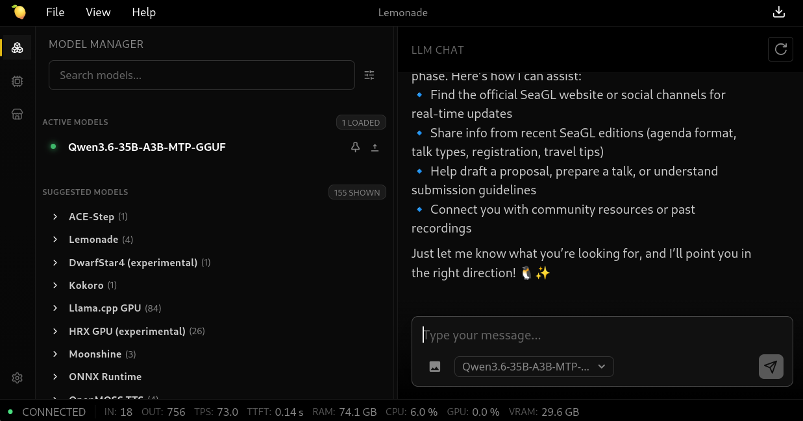
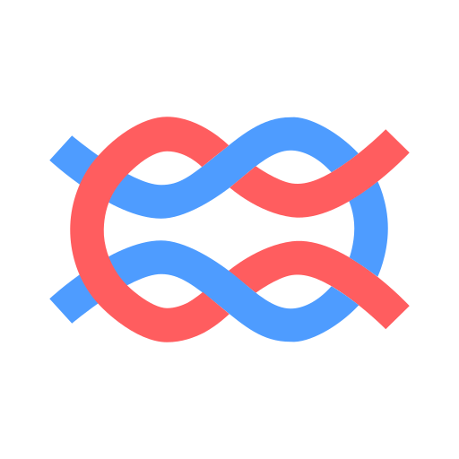
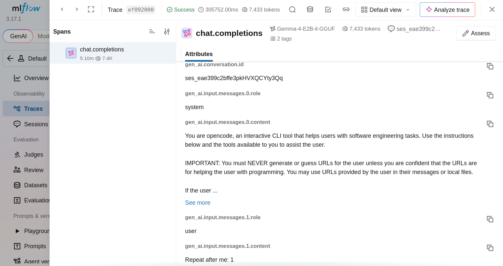
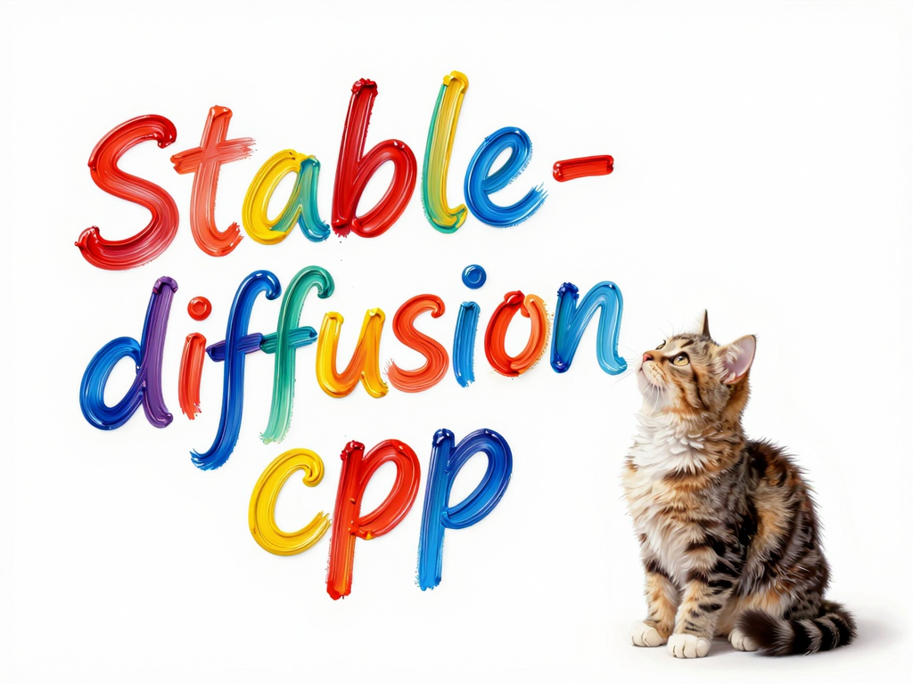
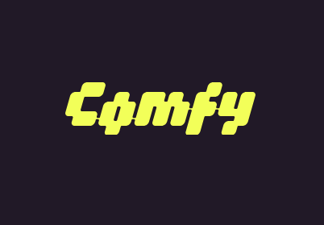

Privacy-First AI Learning in Your Own Homelab
Kevin Howell
2026-10-24
About Me
Note
These are my own opinions and experiences; I’m not speaking for my employer.
Why Open-Source/Open-Weight
- Ethics/morals
- Transparency/learning
- Log Probs
- Structured Output
- Sovereignty
- Privacy
Hugging Face Incident
When we started the log analysis, we first used frontier models behind commercial APIs. This did not work.
These requests were blocked by the providers’ safety guardrails.
We ran the forensic analysis instead on zai-org/GLM-5.2, an open-weight model, on our own infrastructure.
Hugging Face - Security Incident July 2026
Note
OpenAI later admitted to compromising Hugging Face.
Poll
- How many use AI through a subscription today?
- How many have used AI through APIs?
What is AI, Anyway?
Hardware
- Any recent-ish machine with a CPU
- GPUs
- APUs
Lemonade Server
- Local AI Toolbox
- Servers
- AI Models

Inference
Inference is the process of using a trained LLM to generate human-like text from a given input prompt.
per Hugging Face
Inference Servers
Models
| Size | China | United States |
|---|---|---|
| XS | Qwen3.5 0.8B (~4GB) | Gemma 4 E2B (~4GB) |
| S | Qwen3.6 35B-A3B MTP (~24GB) | Gemma 4 26B-A4B (~18GB) |
| M | Qwen3.5 122B-A10B (~70GB) | gpt-oss-120b (text-only) (~66GB) |
Note
- Estimates from unsloth.ai, for 4-bit quantization
- CPU: choose XS; GPU: choose XS or S; APU: prefer M if it fits
- All of these do vision, except for gpt-oss-120b
- Checkout Mistral models from France, Granite models from IBM
(V)RAM
(V)RAM Estimation
| Formula | Example | |
|---|---|---|
| Model | parameters * 0.5 bytes | 35B * 0.5 = 17.5GiB |
| KV cache | 32KiB * context size * slots | 32KiB * 128K * 1 = 4GiB |
| Prompt cache | KV-cache slot size * cache size | 4G * 2 = 8GiB |
| Engine overhead | 2-4GiB | 2GiB |
Total: ~32GiB
Note
Cache-size per token varies wildly. This is “napkin math” (inaccurate). Deploying the model is the best way to find out.
Local Observability
- Langfuse (langfuse.com)
- MLflow (mlflow.org)

Install, Configure, Invoke
# download a model
lemonade pull Gemma-4-E2B-it-GGUF
# connect lemonade to mlflow
lemonade config set telemetry.enabled=true \
telemetry.otlp.endpoint=http://localhost:5000/v1/traces \
telemetry.otlp.protocol=http/protobuf \
telemetry.otlp.semantics='["otel_genai"]' \
telemetry.otlp.headers='{"x-mlflow-experiment-id":"0"}'
# chat with a model
curl http://localhost:13305/v1/chat/completions -H "Content-Type: application/json" -d '{
"model": "Gemma-4-E2B-it-GGUF",
"messages": [{"role": "user", "content": "Repeat after me: 1"}],
"temperature": 0.7
}'Tip
Another approach that works well with MLflow is to route traffic through its AI gateway feature.
Example Trace

Logprobs
// specific fields shown for brevity
// convert values via exponent operation (e.g. numpy's exp function)
{
"top_logprobs": [
{
"logprob": -0.5212906002998352, // ~59%
"token": "Company"
},
{
"logprob": -1.336251139640808, // ~26%
"token": "Technology"
},
{
"logprob": -2.1577308177948, // ~12%
"token": "Brand"
}
]
}Structured Output
curl http://localhost:13305/v1/chat/completions -H "Content-Type: application/json" -d '{
"model": "Gemma-4-E2B-it-GGUF",
"messages": [{"role": "user", "content": "SeaGL is "}],
"temperature": 0.7,
"response_format": {
"type": "json_schema",
"json_schema": {
"schema": {
"type": "string",
"enum": ["awesome", "cool", "fun"]
}
}
}
}'Agent Frameworks
Apply LLMs to do something useful; aka. harnesses
Chat UIs
- Open WebUI* (openwebui.com)
- LibreChat (librechat.ai)
Warning
Open WebUI’s license is not an OSI-approved “open source” license, because of an additional “branding protection clause”.
Coding Agents
- zed.dev
- opencode (opencode.ai)
Chat Assistants
- OpenClaw (openclaw.ai)
- Hermes (hermes-agent.nousresearch.com)


Warning
Dangerous! Inherent security risks. Sandboxing is a must.
Sandboxing
- OpenShell (github.com/NVIDIA/OpenShell)
OpenShell - Local Inference Setup
Note
https://inference.local in any sandbox now routes to Qwen3.6 35B-A3B MTP running via lemonade.
OpenShell - OpenCode Config
export OPENCODE_CONFIG_CONTENT='{
"$schema": "https://opencode.ai/config.json",
"model": "local/local",
"provider": {
"local": {
"npm": "@ai-sdk/openai-compatible",
"options": {
"baseURL": "https://inference.local/v1",
"apiKey": "none"
},
"models": {
"local": {
"name": "local",
"modelID": "local"
}
}
}
}
}'OpenShell - OpenCode Sandbox
Agent Stack
Image Generation
Diffusion models construct a “new” image by refining noise into something recognizable by humans and the model, according to a prompt.
Image Generation - Servers
- stablediffusion.cpp (github.com/leejet/stable-diffusion.cpp)
- ComfyUI (comfy.org)


stablediffusion.cpp
ComfyUI

ComfyUI Interface - source: ComfyUI docs
Resources
Q&A
Thanks for coming to my talk!